Mi secreto de belleza y salud para ustedes
¡Hola, chicos! Todo el mundo se ha dado cuenta de que he perdido mucho peso y me han empezado a bombardear con preguntas. He intentado responderos y daros consejo a todos, pero no lo he conseguido. Con tantos mensajes como tenía, tendría que haberme tirado todo el día en Internet. Entonces, decidí escribir esta publicación para responder a la pregunta: " ¿Cómo has conseguido adelgazar 34 kilos? " (Esto no significa que no podáis escribirme para preguntarme lo que queráis. Es solo para hacer mi vida más fácil).
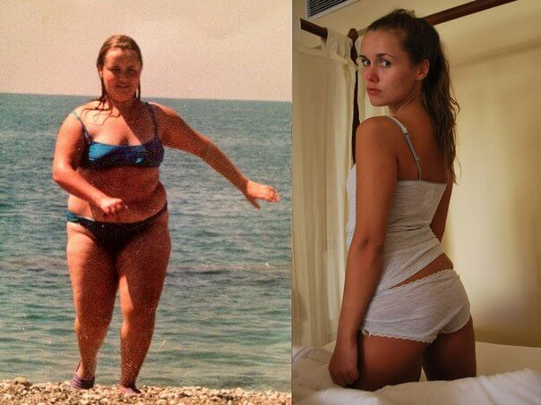
Yo nunca he estado delgada, pero empecé a notar que estaba engordando cada mes más. Me salieron tres pliegues terribles en la barriga, parecía un bulldog en bikini. Y cada vez tenía más grandes las caderas, las piernas y el culo. Decidí conseguir un cuerpo sano y en forma por todos los medios, así que dejé de comer comida frita y grasienta y dejé a un lado las comidas copiosas antes de irme a dormir. Salía a correr por las mañanas y a entrenar por las tardes en el gimnasio pero, en vez de perder kilos, seguía engordando todavía más. Después de un mes, mi peso llegué a unos terroríficos 89 kilos. Restringía mi dieta cada vez más, excluyendo la carne, el pan, los fritos y los dulces. Acabé comiendo solo frutas y verduras y no bebía otra cosa que no fuese agua. Me gasté una pasta en tés y pastillas para adelgazar, pero nada me daba resultado. Después de un tiempo volvía a ganar los kilos que había perdido.
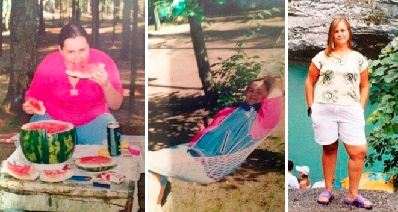
Tras miles de dietas, pastillas y horas en el gimnasio y cientos de euros invertidos en un entrenador personal, me rendí por completo. Un día me topé con un artículo sobre y decidí probarlo. A pesar de que había leído que Demi Moore, Katy Perry, J-Lo y otras famosas habían perdido peso con este producto, yo tenía mis dudas. Pero ya lo había probado todo y estaba desesperada, ¡así que no tenía alternativa! Además, leí los comentarios sobre el producto y eran superpositivos.
¡Estaba decidida! Entré en su sitio web, volví a leer toda la información y pedí el producto. Me llegó en un par de semanas. Leí las instrucciones y empecé a beber un vaso del todos los días, como sustituto del desayuno. ¡Funciona increíblemente bien!
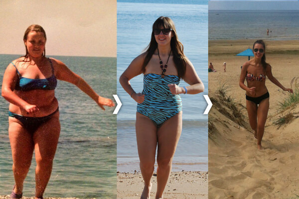
Después de solo dos semanas, los resultados eran fascinantes: ¡Perdí 9,5 kilos! La hinchazón ha desaparecido y mi complexión ha mejorado mucho. Las caderas y la barriga se me han deshinchado bastante. ¡Y mi humor ha mejorado! Empiezo a creer que puedo volver a estar guapa sin dietas ni ejercicio. ¡Así que sigo comiendo todo lo que quiero! Estaba harta de pasar hambre y entrenar...
Al finalizar la tercera semana, ¡perdí otros 4 kilos! Estaba más en forma y eso me animó a empezar a subir por las escaleras en vez de coger siempre el ascensor. ¡Lo que antes me parecía un esfuerzo increíble paso a ser un placer divertido para mí! No podía creerme que me estuviera pasando todo aquello solo por seguir las sencillas instrucciones del paquete del producto. Si yo pude hacerlo, ¡todo el mundo puede! Tres semanas pasan muy rápido y poco a poco perdí 10 kilos.
Conseguí alcanzar mi objetivo en 31 días. Me desapareció la barriga, perdí 20 kilos y conseguí tener el cuerpo de mis sueños.
Ahora recomiendo a todos mis amigos y conocidos. Importante: hacer el pedido desde el sitio web oficial del producto, porque de lo contrario podrían estafarte. Yo estoy feliz con mis resultados y creo que tú también lo estarás. Olvídate de los estereotipos: ¡No necesitas dietas ni ejercicio para conseguir una bonita figura!
¿Tienes estrías?
No, no deja marcas ni estrías gracias al ácido clorogénico que contiene.
¿Y qué pasa con la piel? ¿Consigue estirarse así de rápido?
¡Así es! Ninguna de mis amigas que ha probado ni yo tenemos problemas de estrías ni celulitis.
¿Qué debo comer? ¿Qué dieta debo seguir?
Como ya os he dicho, estoy en contra de todas esas dietas. Y además, no las necesitáis si tomáis regularmente.
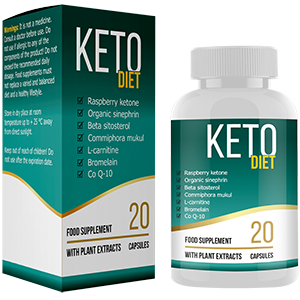¿Es verdad que no se debe comer nada después de las 6 p.m. si no queremos engordar?
¡Eso son estereotipos! ¡Debes comer cada vez que tengas hambre! Por supuesto, es mejor para tu salud y tu metabolismo si comes 4-5 veces al día, ¡pero no demasiado!
A todos aquellos que hayáis perdido peso con : por favor, compartid vuestros resultados aquí. Ayudaréis a convencer a mucha gente de que funciona de verdad. ¡Saludos!
Actualización 29.03.2017
Querida María, gracias por alentarme a deshacerme de esos terribles kilos de más de una vez por todas. Han pasado 3 semanas y ya he perdido 10 kilos. Ahora peso 45 kilos y, como me prometiste, ya no tengo variaciones de peso. Te deseo lo mejor, Lola.
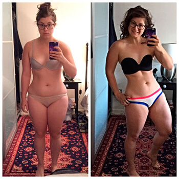
Llevo mucho tiempo soñando con tener un cuerpo delgado. Leí sobre en esta página hace tres meses. He estado dudando mucho tiempo si pedir el producto o no, pero mi madre me convenció. El precio a pagar no es mucho, ¡y podría hacer realidad mi sueño! Ahora estamos adelgazando juntas. Aunque ella está teniendo mejores resultados que yo =(
Me alegro mucho de haber encontrado este blog. Sin duda, voy a probar este producto.
¡Hola, María! Seguí tu consejo y he probado y, bueno... has salvado a mi familia y mi matrimonio :) ¡María, eres una chica estupenda! La actitud de mi marido hacía mí ha cambiado mucho últimamente. He ganado confianza en mí misma... ¡Me siento GENIAL! =)
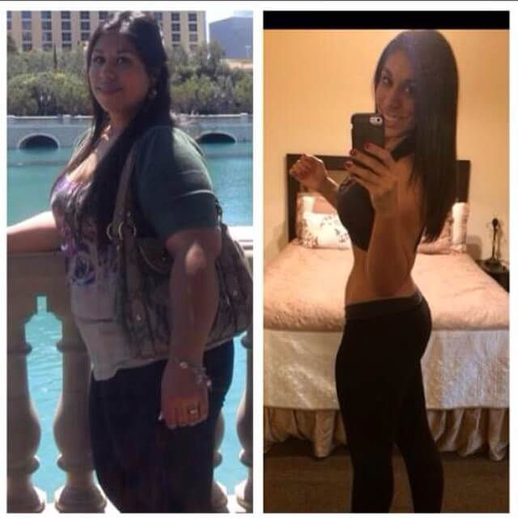
¡Qué pasa, chicas! ¡Pronto me uniré al equipo de adelgazamiento! Acabo de recibir mi . Gracias por compartir vuestros resultados, me motivaron a empezar el tratamiento. Ojalá me deshaga de la grasa de una vez por todas. Yo también os escribiré para contaros mi progreso. ¡Besos!
¡Hola, guapa! ¡Me alegro mucho por ti. Lo más importante es sentirse en armonía por dentro, pero es imposible si no nos sentimos en armonía con nuestro propio cuerpo. Estoy deseando ver los primeros progresos. Y recordad: es mejor conseguir pequeños progresos, que no conseguir nada en absoluto. ¡Mucha suerte!
Querida María, estoy contentísima de haber encontrado tu página y espero que me ayudéis. He probado un montón de métodos para perder peso, pero nunca he conseguido los resultados que quería. Mido 1,63 y peso 97 kilos. Tengo que perder por lo menos 43 kilos y creo que es lo único que me queda por probar...
¡Hola, Carolina! No soy la única que ha adelgazado usando este producto. Mis amigas también lo han probado y FUNCIONA. Te garantizo 100 % que no te volverás a decepcionar. ¡Todas nosotras estamos encantadas con los resultados y te deseamos lo mismo a ti!
Chicas, os quiero pedir una cosa más. Por favor, dedicad unos minutitos de vuestro tiempo a compartir vuestros resultados. ¡Compartir es vivir! Vuestros mensajes podrían persuadir a alguien más a adelgazar, ponerse guapa y ser feliz.
Lo recibí ayer y hoy ha empezado mi nueva vida. ¡Estoy deseando ver los primeros resultados!
¡Querida María! ¡Muchísimas gracias! Perdí peso muy rápidamente pero, sobre todo, no lo he vuelto a recuperar como solía pasarme. ¡Es un milagro! Les recomiendo a mis amigas que utilicen este producto porque no puedo soportar verlas muriéndose de hambre.
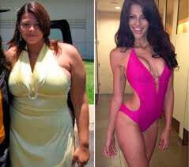
Mañana tengo una cita y vamos a ir a cenar a un sitio precio. Hace algunas semanas, solo pensar en ir allí y comer algo sin saber cuántas calorías contiene era una auténtica pesadilla. ¡Pero ya no me preocupa! Ahora puedo comer todo lo que quiera y no ganar peso. He perdido 26 kilos con la ayuda de en solo un mes. ¡Mil gracias, María!
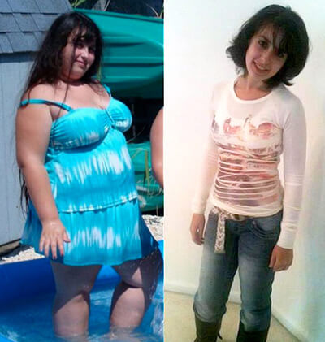
¡Guau, María! ¿De verdad conseguiste todo eso en solo un mes? Entonces quizás yo también debería pedir el producto... He engordado otros dos kilos. Es horrible...
¡¡¡Yo perdí 33 kilos en 6 semanas!!! ¡Increíble! ¡¡¡Muchas gracias, María!!!
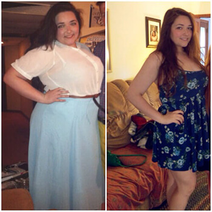
¡Enhorabuena, Lorena! ¡Tus resultados son magníficos! ¡¡¡Ya no tengo dudas sobre !!!
Como os prometí, aquí estoy para compartir mis resultados con vosotros. El sistema es excelente. Yo conseguí perder casi 30 kilos en 6 semanas. ¡UNA PASADA!
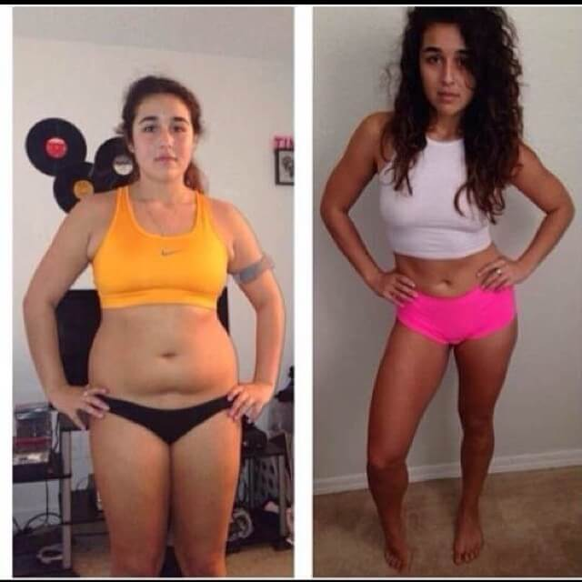
Olvidaos de todas las dudas, ¡funciona de verdad! Mi amiga también ha perdido peso con : unos 17 kilos en 2 meses, si no me equivoco. Impresionante, ¿eh?
Gracias por vuestros comentarios, chicas. Me habéis motivado mucho a pedir y trabajar para mejorar mi físico. Ya he perdido 4 kilos y medio. ¡Solo me quedan otros 3 para llegar a mi objetivo!
Mis tres primeras han dado un cambio increíble después de tomar este producto durante un par de meses. Han pasado de ser las típicas chicas de talla grande a mujeres espectacularmente guapas.
Bueno, estos son mis resultados: perdí 20 kilos sin ir al gimnasio ni una sola vez. ¡Todo el mundo se ha quedado de piedra con lo que he conseguido!
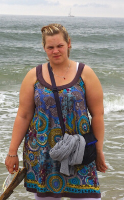 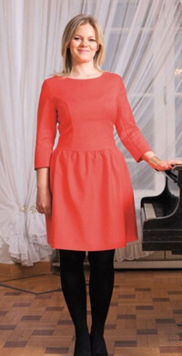
¡Hola, Gracia! ¡Me alegro mucho por ti! Pero, si no recuerdo mal, creo que querías perder un poco más. ¡Ha sido un buen comienzo! ¡Sigue así! ¡Muchísima suerte! xxx
¡Hola, María! Leí tu publicación y me he animé a pedir . Dentro de poco me reencontraré con mis compañeros del instituto. Llevamos mucho sin vernos y me daba mucha vergüenza aparecer tirando de 106,5 (!!!) kilos de peso y llevando una talla XXL. Cuando tenía 17 años estaba muy delgada... Ahora peso 62,5 kilos y me he comprado un vestido de la talla M. Todavía me queda mucho por mejorar, pero te estoy muy agradecida por darme la motivación que necesitaba para empezar.
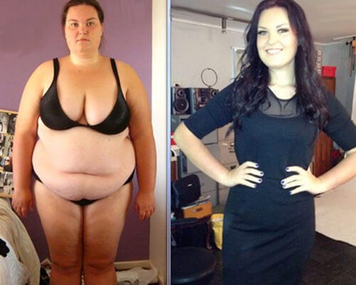
Lo que has conseguido es increíble... pero no sé si lo he entendido bien. ¿No tengo que seguir ninguna dieta? Me mosquea el simple hecho de pensar en otra dieta baja en carbohidratos o algo de eso... ¡No quiero pasar más hambre, por favor!
Ana, lo has entendido bien. no requiere que sigas ningún tipo de dieta. Todos sabemos que en el momento que se deja la dieta, el peso se recuperar. Con nunca te pasará eso. Así que no te preocupes. ¡Pruébalo y ya verás!
¡¡¡¡Tenía que compartir esto con vosotros!!!! ¡¡¡He perdido 40 kilos en tres meses!!! ¡El producto este es un tesoro! Mi marido y yo estamos en nuestra segunda luna de miel :)
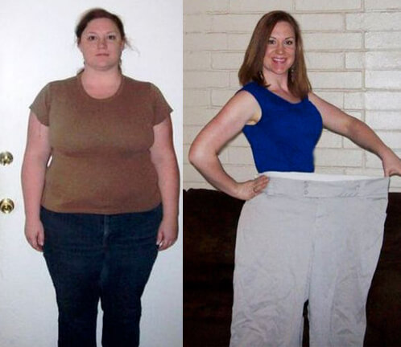
Hace cuarenta días que empecé a tomar y ya he perdido 22,5 kilos. Me avergüenza decir que pesaba 109 kilos y me daba demasiada vergüenza ir a la playa, aunque fuese verano...
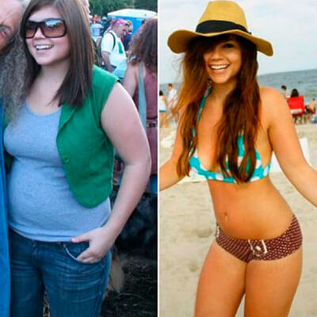
Tengo que perder 14 kilos urgentemente... He entrado en este sitio web y me he quedado fascinada con tantos comentarios buenos y resultados excelentes... Le voy a dar una oportunidad al producto y veremos a ver qué ocurre.
Mi hermana me compró un par de paquetes de en China el año pasado. Al principio pensé que era ridículo. ¡Cómo iba a adelgazar sin dietas ni ejercicio! Pero ella me convenció y lo probé... Nunca pensé que fuese posible... Empecé a usarlo en febrero y en mayo HABÍA CAMBIADO MI ARMARIO POR COMPLETO. ¡¡¡Todo me quedaba grande!!! Pasé de pesar 61,5 kilos a 22 en menos de un mes. ¡¡¡Han pasado 2 años y mi peso no ha cambiado!!! ¡Ahora soy una chica feliz! Como conclusión, os aconsejo que probéis este producto un par de semanas... y veréis lo que ocurre...
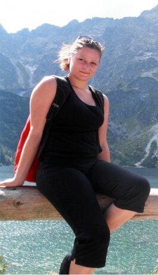 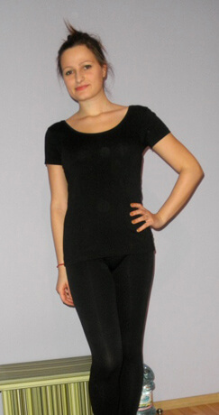
¡Guau, Olivia! ¡Tus resultados son impresionantes! Querídas, quiero disculparme por no poder haberos respondido antes a todas, pero he leído vuestros mensajes y quiero deciros que estoy muy contenta y muy orgullosa de vosotras y vuestros resultados.
Hace tanto tiempo ya que ahora me da hasta risa pensar que antes pesaba 62 kilos... Ahora peso 55 kilos y no importa lo que coma ni lo que beba, ¡mi peso no varía! Me enorgullece compartir las fotos de mi progreso con vosotros:
Quería María y todos los que habéis escrito un comentario en esta página. No tengo palabras para expresaros mi agradecimiento y la felicidad que siento... Tengo 33 años y estos últimos años lo he pasado fatal por mi peso. Hasta el entrenamiento más simple era todo un reto para mí, tenía un dolor de espalda horrible, me cansaba muchísimo... Leí vuestras publicaciones y decidí probar . ¡Y los resultados superaron mis expectativas! Ahora peso 57 kilos, pero antes pesaba 82,5. ¡Perdí 25,5 kilos en tres meses! ¡Me siento genial! ¡Como si tuviera 10 años menos! ¡Ya no tengo disnea ni me duele la espalda!
Estuve bebiendo té chino para perder peso y la verdad es que me ayudó a perder 4,5 kilos, pero los volví a recuperar en 2 semanas. Por favor, sed sinceras. ¿Me puede ocurrir lo mismo con ?
Hola, Charo. No te preocupes, no te va a pasar lo mismo. Solo tienes que echarle un vistazo a las fotos del resto de las chicas y a las mías. Perdimos peso muy rápido y no hemos vuelto a recuperar ni un gramo desde entonces. El ácido clorogénico funciona muy bien y ayuda a nuestro cuerpo a controlar la grasa que gana. Deberías probar durante una semana y verás su efecto inmediatamente.